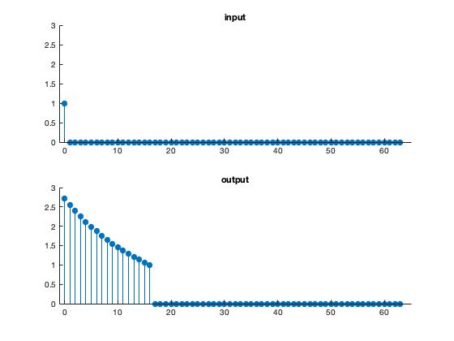
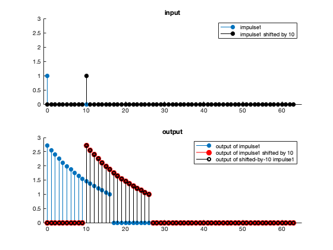
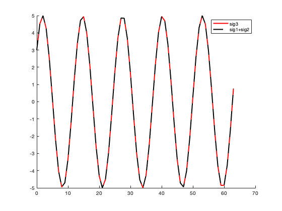
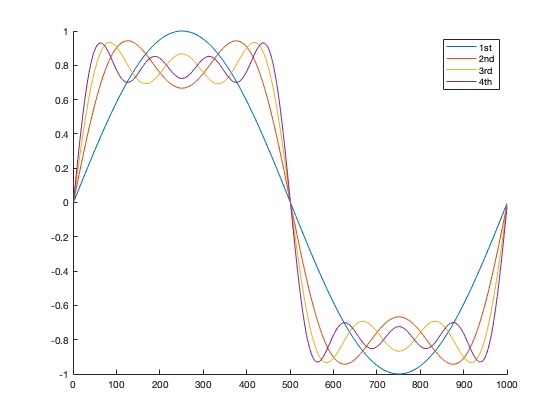
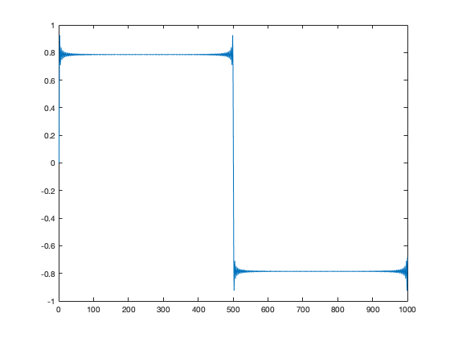
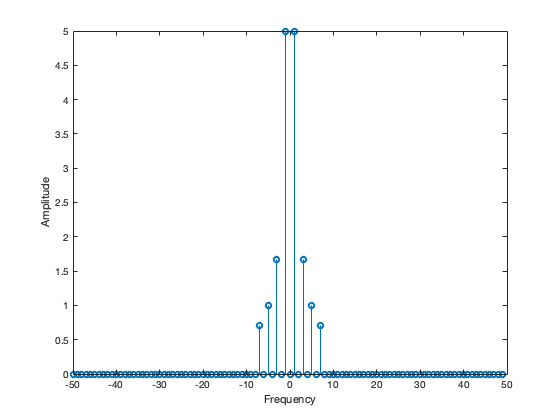
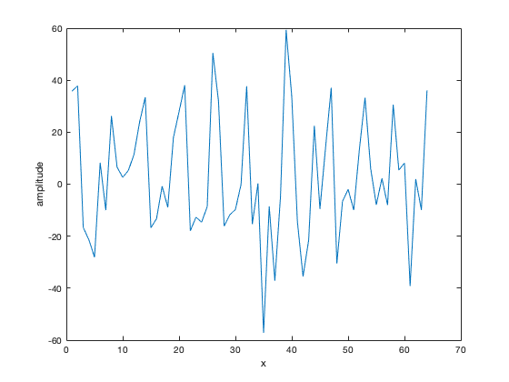
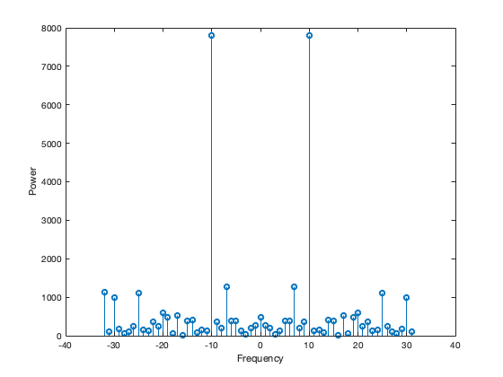

Contents
Exercise 1.1 -- Checking for linearity
close all
clear
n = 64;
x = 0:n-1;
in1 = randn(n,1);
in2 = randn(n,1);
out1 = labsystem(in1);
out2 = labsystem(in2);
out_sum = labsystem(in1+in2);
disp((out_sum - (out1+out2)<1e-8)')
Columns 1 through 19 1 1 1 1 1 1 1 1 1 1 1 1 1 1 1 1 1 1 1 Columns 20 through 38 1 1 1 1 1 1 1 1 1 1 1 1 1 1 1 1 1 1 1 Columns 39 through 57 1 1 1 1 1 1 1 1 1 1 1 1 1 1 1 1 1 1 1 Columns 58 through 64 1 1 1 1 1 1 1
Exercise 1.2 Find the impulse response of system 1 (assuming it is LSI)..
we will check more in depth whether it is or not later
close all clear n=64; x=0:n-1; impulse = zeros(n,1); impulse(1) = 1; output = labsystem(impulse); subplot(211) stem(x, impulse,'filled') axis([-1,65,0,3]) box off title('input') subplot(212) stem(x, output,'filled') axis([-1,65,0,3]) box off title('output')
Exercise 1.2 cont'd Testing a system for shift invariance
close all clear n=64; x=0:n-1; impulse = zeros(n,1); impulse(1) = 1; output = labsystem(impulse); subplot(211) hold on stem(x, impulse,'filled') stem(x, circshift(impulse,10),'k','filled') axis([-1,65,0,3]) box off title('input') legend('impulse1','impulse1 shifted by 10') subplot(212) hold on stem(x, output,'filled') stem(x, circshift(output,10),'r','filled','markersize',8) stem(x, labsystem(circshift(impulse,10)),'ko') legend('output of impulse1','output of impulse1 shifted by 10','output of shifted-by-10 impulse1') axis([-1,65,0,3]) box off title('output')
Exercise: Sinusoids are sinusoids
How do sig1, sig2, and sig3 relate to each other?
close all clear k = 5; n = 64; % total number of points x = 0:(n-1); % domain on which to plot sig1 = 3*cos(2*pi*k/n * x); sig2 = 4*sin(2*pi*k/n * x); sig3 = 5*cos(2*pi*k/n * x - atan(4/3)); hold on plot(x, sig3,'r','linewidth',2) plot(x, sig1+sig2 ,'--k','linewidth',2) legend('sig3','sig1+sig2') % sig3 is a cosine phase-shifted by a given angle, sig1 and sig2 are % cosines and sines of the same frequency of sig3, but WITHOUT phase % shifts. sig3 = sig1+sig2. This can be done for every single phase-shifted % sinusoid, and is a fundamental foundation of the Fourier transform.
Exercise: Sinusoids as building blocks
close all clear n=1000; x = (0:n-1)'; hold on y = sin(2*pi*1/n * x); plot(y) y = y+ 1/3*sin(2*pi*3/n * x); plot(y) y= y+ 1/5*sin(2*pi*5/n * x); plot(y) y= y+ 1/7*sin(2*pi*7/n * x); plot(y) legend('1st','2nd','3rd','4th') figure y = zeros(n,1); for k = 1:2:250 y = y + 1/k * sin(2*pi*k/n * x); end plot(y) 
The Fourier transform
Remember, the Fourier transform is a matrix multiplication! i.e. a linear transformation. Let's compute the DFT amplitude spectrum of the square wave signal we created above.
close all clear n = 100; x = (0:n-1)'; y = zeros(n,1); for k = 1:2:7 y = y + 1/k * sin(2*pi*k/n * x); end fft_mat = dftmtx(n)/sqrt(n); %create the DFT matrix. Remember to divide by sqrt(n) fft_y = fft_mat*y; fft_y = fftshift(fft_y); ampl_spec = abs(fft_y); figure %note there is power/amplitude at k=1, 3, 5, and 7; as one might expect stem((-n/2:(n/2-1)), ampl_spec); xlabel('Frequency') ylabel('Amplitude')
Plotting the Power spectrum
close all clear n = 64; x=(0:n-1)'; yy = 5+ 20*randn(n,1) + 5*cos(2*pi*25/n * x) + 10 *cos(2*pi*15/n * x) + 25* cos(2*pi*10/n * x); % Where do you expect to see power in the signal yy? Take a look at their % k's (25, 15, and 10) Also the initial +5 at the beginning of the signal % means there will be a 0 frequency component with power. And the randn() % (i.e. random noise) adds random power at every frequency figure plot(yy) xlabel('x') ylabel('amplitude') figure fft_y = fftshift(fft(yy,n)/sqrt(n)); %fftshift shifts the spectrum so 0 lies at the middle amplitude_spec = abs(fft_y); power_spec = amplitude_spec.^2; stem((-n/2:((n/2)-1)), power_spec) ylabel('Power') xlabel('Frequency') 